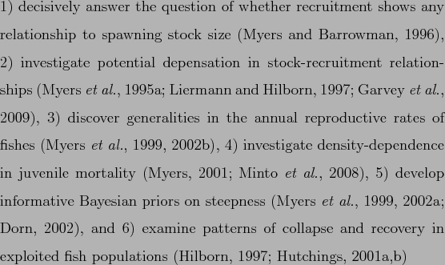
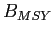
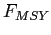

Next: Methods Up: Assessing the knowledge-base for Previous: Abstract
Marine wild capture fisheries provide more than 80 million tons of fisheries products (both food and industrial) per year and employ 43.5 million people (wild capture and aquaculture, FAO:sofia). At the same time, fishing has been recognized as having one of the most widespread human impacts in the world's oceans Halpern:etal:2008:science, and the Food and Agricultural Organization of the United Nations (FAO) estimates that two-thirds of fish stocks globally are fully exploited or overexploited FAO:sofia. While many fisheries have reduced exploitation rates to levels that should in theory promote recovery, overfishing continues to be a serious global problem Worm:etal:2009:science. Fishery managers are asked to address multiple competing objectives, including maximizing yields, ensuring profitability, reducing bycatch, and minimizing the risk of overfishing. Given the large social and economic costs Rice:etal:2003:icescm and ecosystem consequences Frank:etal:2005:science, Myers:etal:2007:science of collapsed fisheries, it is imperative that we are able to quickly learn from successful and failed fisheries from around the world.
Effective management of exploited fish populations generally requires an understanding of where the current size and harvest rate lie in relation to the size and rate which maximize fishery benefits or limit the risk of overfishing. This process of quantitative determination of stock status and estimation of reference points is called stock assessment. Some fisheries in developing countries have apparently provided sustainable yields for long periods of time without formal stock assessment (e.g. many community-managed fisheries in Oceania; [282002Johannes]). This has been achieved by limiting harvest rates, often through gear restrictions or seasonal and area closures. In modern industrialized fisheries, however, where fishing capacity exceeds the productivity of fished stocks, stock assessment is an integral component of responsible management Hilborn:Walters:1992.
The global databases of fishery landings compiled by [112009aFAO] and extended by the Sea Around Us project Watson:etal:2004:fandf have proven to be valuable resources for understanding the status of fisheries worldwide; however, catch data alone can be misleading when used as a proxy for stock size. Many papers have used these data to examine changes in fishery status Worm:etal:2006:science, Costello:etal:2008:science, including changes in trophic level Pauly:etal:1998, Essington:etal:2006:procnatacadsci, Newton:etal:2007:currentbiol. Most of these analyses rely (either explicitly or implicitly) on the assumption that catch or landings is a reliable index of stock size. Critics have pointed out that catch can change for a number of reasons unrelated to stock size, including changes in targeting, fishing restrictions, or market preferences deMutsert:etal:2008:pnas, Murawski:Methot:Tromble:2007:science, Hilborn:2007:science, Caddy:etal:1998:science. Standardizing catch by the amount of fishing effort (catch-per-unit-of-effort, CPUE) is an improvement, particularly when these data are modeled to account for spatial, temporal, and operational factors affecting the CPUE Maunder:punt:2004:fishres, but CPUE can still be an unreliable index of relative abundance since it is difficult to account for all relevant factors Hutchings:Myers:1994:cjfas, Harley:etal:2001:cjfas, Walters:2003:cjfas, Polacheck:2006:marpol.
Stock assessments consider time series of catch along with other sources of information such as: natural mortality rates, changes in size or age composition, stock-recruitment relationships, and CPUE coming from different fisheries and/or from fishery-independent surveys. Because they integrate across multiple sources of information, stock assessment models should provide a more accurate picture of changes in abundance than catch data alone Sibert:etal:2006:science, the trade-off being that their complexity renders them difficult for non-experts to evaluate. Without a current and comprehensive database of stock assessments, however scientists wishing to conduct comparative analyses of marine fish population dynamics and fishery status have little choice but to use problematic catch data.
The first global database of stock assessment information, the Myers
Stock Recruitment Database, was developed by the late Ransom A. Myers
and colleagues in the mid-1990s Myers:etal:1995:summary.
While the database was primarily known for its time series of stock
and recruitment, it did contain time series of fishing mortality rates
for many stocks; biological reference points were however largely
absent. The original release version of the Myers database
Myers:etal:1995:summary included spawning stock size and
recruitment time series for 274 stocks representing 92 species as well
as fishing mortality rates time series for 144 stocks. The number of
entered stocks grew to approximately 642 stocks (509 with at least one
SR pair) by 2005. Note that anadromous fishes
of the family Salmonidae comprised 290 assessments in the original
database. The assessment results collated by Dr. Myers were used to:

.
Although the original Myers database Myers:etal:1995:summary was critical for motivating comparative analyses in fisheries science, most of the stocks are now 15 years out of date. For stocks that were depleted in 1995, the past 15 years include valuable observations at low stock size or of a recovering population, both of which are critical for estimating population dynamics parameters such as the behaviour of the stock-recruitment relationship near the origin. In addition, there have been numerous improvements in stock assessment methodologies (including important advances in statistical catch-at-age and catch-at-length models) and assessments have been conducted for the first time for many species.
Meta-analyses of fishery status also have been hampered by the lack of a global assessment database containing biological reference points (BRPs, e.g., the total/spawning biomass and fishing mortality rate that produce Maximum Sustainable Yield (MSY),  and ). Knowledge of BRPs is important if stocks are to be managed for high yields that can be sustained over time Mace:1994:cjfas. Without information on reference points, previous analyses of stock assessments or catch data have instead relied upon non-biological thresholds to define fishery status, such as the greatest 15-year decline Hutchings:Reynolds:2004:biosci or 10 percent of maximum catch Worm:etal:2006:science. Ad hoc reference points based on some fraction of the maximum of a time series also have undesirable statistical properties and can result in false collapses when applied to inherently variable time series of catch or abundance Wilberg:Miller:2007:science, branch:2008:marpol. Complicating comparisons of fishery status is the fact that different BRPs are used in different parts of the world and even the same BRP can be used in a different manner, for example, as a target or as a limit.
Here we present a new global database of stock assessments for commercially exploited marine fish populations. The database is an update and extension of that developed by Ransom A. Myers, and is named the RAM Legacy database in honour of his pioneering contribution. This effort is the first global stock assessment database to:
We use the new RAM Legacy database (Version 1.0, 2010) to evaluate the knowledge-base for commercially exploited marine populations in terms of institutional contributions, geography, taxonomy, ecology, timespan, stock assessment methodologies and BRPs. We compare the database's taxonomic coverage to that of global fisheries catches and to global fish diversity. We then evaluate the status of assessed stocks globally, and by management body, referencing all stocks to a comparable benchmark. Finally, we discuss biases in the knowledge base for assessed marine species, highlight potential applications of the database, point out its caveats and limitations, and outline directions for future development.
Stock-recruitment database administrator 2010-07-15